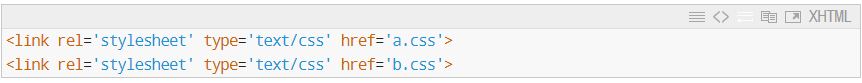
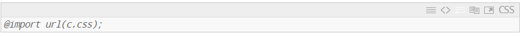
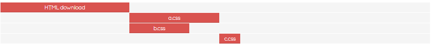
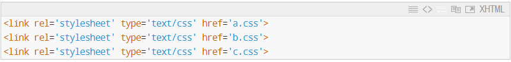
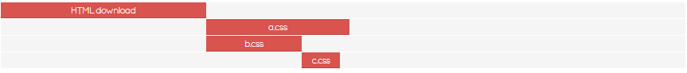

Hạn chế sử dụng @import
Hạn chế sử dụng
@import hoặc tốt nhất là
không nên sử dụng @import trong file CSS, vì nó sẽ
làm chậm quá trình tải và
không sử dụng được khả năng tải file đồng thời của
browser. Để dễ hiểu bạn hãy xem ví dụ sau:
Chúng ta có 2 file CSS là
a.css và
b.css được nhúng vào trang
web như sau:

Trong file b.css, bạn
import file c.css:

Kết quả khi browser tải trang sẽ như thế này:

Chú thích:
- Request 1: browser gửi request để lấy HTML về
- Request 2: browser gửi request để lấy a.css
- Request 3: browser gửi request để lấy b.css
- Request 4: browser gửi request để lấy c.css
Như các bạn thấy ở hình trên, để tải được
c.css thì browser phải chờ
để tải xong a.css.
Lý do: Vì browser khi đã tải xong
b.css và bắt đầu đọc nội
dung bên trong thì thấy @import yêu cầu phải tải thêm
c.css, lúc này browser phải
đứng chờ cho nhóm proccess trước đó chạy xong (trong trường hợp
này là chờ a.css) thì mới
bắt đầu tải tiếp c.css và
tiếp tục render sau khi đã tải xong. Trong khi đó nếu bạn loại
bỏ @import url(c.css) trong b.css đi và nhúng trực tiếp c.css
vào trang HTML

thì bạn sẽ có kết quả như sau:

Lúc này browser sẽ bắt đầu tải file đồng thời không cần phải chờ
cho a.css tải xong, sẽ rút
ngắn được thời gian tải file xuống.
---------------------------------------------------------------------------------------------------------------------------------------------
Giảm kích thước file CSS
Giảm kích thước file CSS được thực hiện bằng cách loại bỏ các
khoảng trắng không cần thiết, dấu xuống hàng, dấu chấm phẩy cuối
cùng trong class hoặc id… Công đoạn này còn được gọi là
minify. Để tiện phân biệt giữa file chưa minify
và file đã minify thì bạn nên thêm .min vào tên
file đã minify. Ví dụ
style.css sau khi minify sẽ
thành style.min.css.
---------------------------------------------------------------------------------------------------------------------------------------------